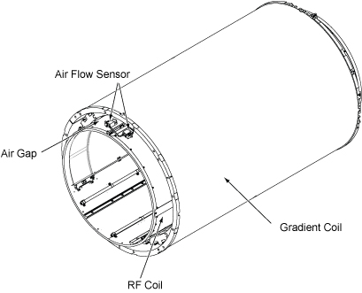
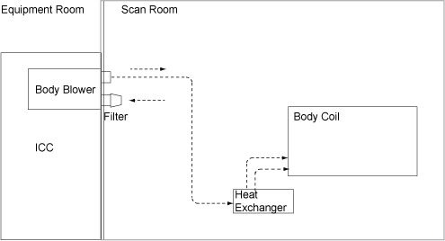

- 00000018WIA30F00F20GYZ
- id_131060582.13
- Aug 25, 2023 8:39:59 PM
Body coil air flow functional check
Examine the functionality of the body coil air blower system, which cools the patient bore wall surfaces.
Prerequisites
| Personnel requirements | |||
|---|---|---|---|
| Required persons | Preliminary requirements | Procedure | Finalization |
| 1 | - | 10 to 15 minutes for Checking body coil air flow 60 minutes for Checking body coil air flow and Troubleshooting body coil air flow | - |
| Safety | ||||
|---|---|---|---|---|
| ||||
| Required conditions |
|---|
|
System software must be started. |
About this task
This test examines the functionality of the body coil air blower system, which cools the patient bore wall surfaces by forcing air between the gradient coil and the RF coil Air flow system. Air enters the RF coil through two rear air ports; therefore, the rear of the RF coil needs to have an airtight seal (foam and gasket) in order to maintain a sufficient pressure head to force air to flow. This helps to transfer heat away from the bore wall with convection. If there is not an airtight seal (foam and gasket) in the rear of the RF coil, there will not be enough pressure to force air through the space between the gradient and RF coils.
The system currently has a configuration according to the block diagram shown in Input/output for cooling air. Air is pulled out of the magnet room and travels through the penetration wall and into the Integrated Cooling Cabinet (ICC). This air is then sent back through the penetration wall and into the magnet room. This air then travels from the penetration wall, splits into two air hoses, and into the back of the RF coil through tubing in the body coil.
There are two rubber gaskets and one foam seal positioned on the RF body coil.
The rear rubber gasket prevents air from escaping at the service end of the RF coils outer diameter and forces air to the patient end of the RF coil.
The foam seal is also located on the service end of the RF coils outer diameter and is the outermost seal on the service end. This seal is crucial to prevent air leakage when the rear rubber gasket is not making good contact between the gradient coil inner diameter and RF body coils outer diameter.
The second rubber gasket is located at the patient end of the RF coil and only seals about two-thirds of the RF coil, leaving a one-third gap near the top of the RF coil. This forces air to pass through the gap.
At the front top of the body coil, there are two air sensors that capture an average airflow measurement. This information can be checked using Functional Diagnostics on the Service Browser. This airflow requires a measurement of greater than 440 feet per minute (fpm) during scanning operations. If the airflow measurement is less than 440 fpm, see Troubleshooting body coil air flow.


Checking body coil air flow
Procedure
Troubleshooting body coil air flow
About this task
The air flow fpm should always be greater than 440 fpm. In situations where the fpm falls under 440 fpm, follow the checklist for troubleshooting below. After each checklist task, look at the Body Coil Air Flow Functional Diag to see if the air flow fpm is 440 fpm or greater.